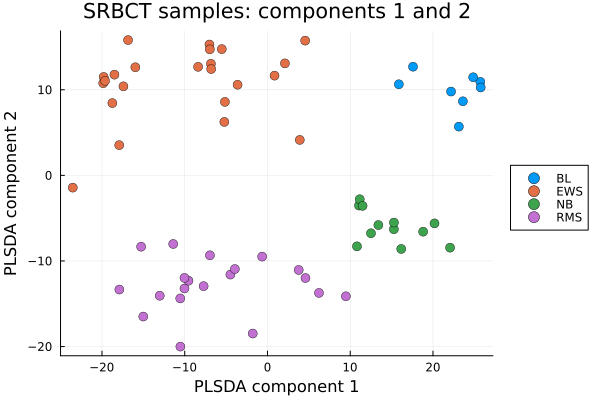
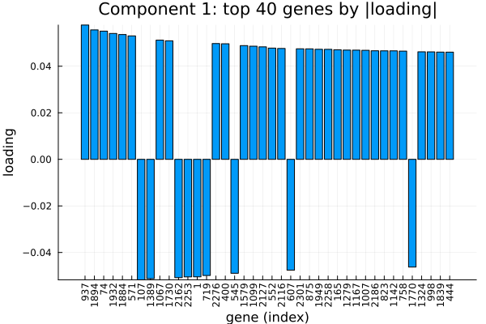
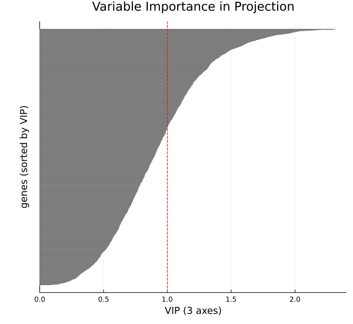

PLSDA: PLS Discriminant Analysis
PLS discriminant analysis or PLSDA is a supervised classification method. PLSDA is a modification of partial least square regression that makes it suited for classification, where the components separate the classes. Unlike its sparse counterpart splsda, PLSDA does not do variable selection, so every variable contributes to each component.
In this documentation, we will depomstrate implementation of PLSDA using BigRiverEssence.plsda on a SRBCT dataset.
The method
Let us consider a vector of classes where the $i$th component indicates the class of the $i$th observation. Let $X$ be a matrix of predictors with variables being the columns and observations being the rows. In PLSDA, the class labels are first dummy-encoded such that we get an indicator matrix $Y$ from the vector of classes, where $Y_{ik} = 1$ if sample $i$ belongs to class $k$. PLSDA then performs a PLS regression of the predictors $X$ onto this indicator matrix $Y$.
In PLSDA, we find each component by obtaining loading vectors $u$ (over variables) and $v$ (over classes) such that we maximize the covariance between the variable side score $Xu$ and the class side score $Yv$. Hence the optimization probem can be written as: $\max_{u,v} \; \operatorname{cov}(Xu, Yv) \quad \text{subject to } \|u\|_2 = \|v\|_2 = 1.$ Unlike splsda, no penalty is applied to $u$, so all variables contribute to each loading. We then solve the component by alternating power iteration where we update $u$ from the class scores, then we update $v$ from the variable scores — until the loadings converge. We then deflate both the variable block $X$ and the class block $Y$ by regressing on the variable score (the regression mode). We then extract the next component from the residual.
The result gives, per component, a dense loading over all variables and sample scores that separate the classes.
The data
We use the SRBCT dataset from the mixOmics package. The SRBCT (Small Round Blue Cell Tumors) dataset contains expression levels of $2308$ genes on $63$ samples across four tumor classes — Ewing sarcoma (EWS), Burkitt lymphoma (BL), neuroblastoma (NB), and rhabdomyosarcoma (RMS) — from Khan et al. (2001) [1], obtained via the mixOmics R package [2]. The goal is to build components that can best discremenate the tumour classes.
using BigRiverEssence, DelimitedFiles, Plots, Statisticsdatadir = joinpath(pkgdir(BigRiverEssence), "reference_Data", "srbctdata")
X = readdlm(joinpath(datadir, "gene.csv"), ',', Float64) # 63 × 2308 gene expression
y = vec(readdlm(joinpath(datadir, "class.csv"), String)) # 63 class labels
size(X), unique(y)((63, 2308), ["EWS", "BL", "NB", "RMS"])Fitting the model
Now we fit plsda to the predictor matrix $X$. We also pass the number of components we want to have as ncomp. Unlike splsda, there is no keepX since PLSDA does not select variables. We fit three components.
ncomp = 3
m = plsda(X, y, ncomp)
# unlike splsda, the loadings are dense — every gene contributes to each component
[count(!iszero, m.loadings_X[:, c]) for c in 1:m.ncomp]3-element Vector{Int64}:
2308
2308
2308The fitted Plsda holds the sample scores (variates_X), the dense gene loadings (loadings_X), the class labels, and the dummy encoding.
Sample plot
Now we project the samples onto the first two components and color by tumor class. This will show us how the discriminant components separate the types.
V = m.variates_X
scatter(V[:, 1], V[:, 2]; group = y,
xlabel = "PLSDA component 1", ylabel = "PLSDA component 2",
title = "SRBCT samples: components 1 and 2", legend = :outerright,
markersize = 5, markerstrokewidth = 0.5)
We note from the above plot that components $1$ and $2$ are able to separate the four tumor types. Component 1 separates BL from EWS and NB from RMS. Hwere as component 1 separates BL and EWS from NB and RMS. Hence we see 4 clusters at four corners.
Top genes by loading
Since PLSDA does not select variables, every gene has a nonzero loading. To see which genes define a component, we look at the ones with the largest-magnitude loadings. We plot the discriminant weights of the $40$ genes with the largest absolute loading on component $1$ as a bar plot.
L1 = m.loadings_X[:, 1]
sel = sortperm(abs.(L1); rev = true)[1:40] # the 40 largest-magnitude genes on component 1
bar(L1[sel]; xticks = (1:length(sel), string.(sel)), xrotation = 90,
legend = false, xlabel = "gene (index)", ylabel = "loading",
title = "Component 1: top $(length(sel)) genes by |loading|")
Variable importance (VIP)
VIP (Variable Importance in Projection) summarizes each gene's contribution across all components into a single score. We compute it as in mixOmics: variables with VIP scores to see the proportion above or below $1$.
vip_final = vip(m)[:, end] # cross-component VIP (last column)
# --- all genes, sorted by VIP, thin horizontal bars ---
ord = sortperm(vip_final; rev = true) # ALL genes, sorted high → low VIP
vals = vip_final[ord]
n = length(vals)
xhi = ceil(maximum(vals) * 10) / 10 # a bit above the largest VIP
bar(
1:n, reverse(vals); # explicit (category, value) so orientation is unambiguous
orientation = :horizontal,
fillcolor = :black, linecolor = :grey, # thin black bars
bar_width = 1.0,
yticks = false, # 2308 labels won't fit — hide them
legend = false,
xlims = (0, xhi), # VIP axis: 0 to ~2.4 (NOT the gene count)
xlabel = "VIP ($(m.ncomp) axes)",
ylabel = "genes (sorted by VIP)",
title = "Variable Importance in Projection",
left_margin = (10,:mm),
size = (600, 550)
)
vline!([1.0], color = :red, linestyle = :dash) # threshold at VIP = 1
We see in the above plot, that when sorted by VIP, around half of genes have VIP avove 1 and half below 1.
Summary
In this example, we used a dataset with $63$ samples and $2308$ genes. The plsda model we fitted built three components that separate the four tumor types using all of the genes. plsda can be used in any such dataset where the goal is discriminent analysis and the number of predictor variables exceeds the number of rows. When variable selection is also desired, splsda adds sparsity on top of this same model.
References
[1] Khan, J., Wei, J. S., Ringnér, M., et al. (2001). Classification and diagnostic prediction of cancers using gene expression profiling and artificial neural networks. Nature Medicine, 7(6), 673–679.
[2] Rohart, F., Gautier, B., Singh, A., & Lê Cao, K.-A. (2017). mixOmics: An R package for 'omics feature selection and multiple data integration. PLoS Computational Biology, 13(11), e1005752.